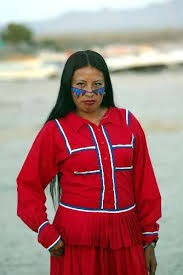
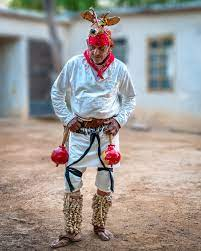
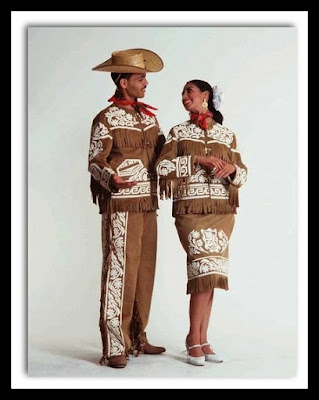

Gente y trajes tipicos
|

Traje de la mujer yaqui Blusa: Blanca, de algodón, bordada a mano con motivos florales o geométricos en colores vivos. Falda: Larga, amplia, con olanes y decorada con listones de colores. Se acompaña con un mandil bordado. Accesorios: Pañuelo en la cabeza, rebozo, collares de chaquira o semillas. Calzado: Generalmente sandalias o descalza para ciertas danzas tradicionales. Usos: Especialmente durante las fiestas religiosas, como la Semana Santa yaqui. |
|

Traje yaqui masculino Camisa y pantalón blancos: De manta o algodón. Máscara: En las danzas del venado, el danzante porta una máscara de madera y se viste con una faja, sonajas (tenábaris) hechas de capullos de mariposa y otros adornos tradicionales. Danza del Venado: Es uno de los símbolos culturales más importantes del estado. |
|

Traje ranchero femenino
Vestido: De una sola pieza, con vuelo, mangas abullonadas, encajes y listones. Inspirado en el traje de china poblana, pero adaptado al desierto.
Sombrero: Opcional, de palma o fieltro.
Botas: De piel, estilo vaquero. |